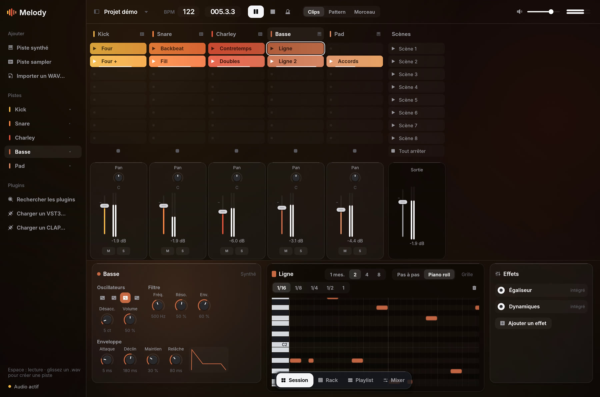

Mac
macOS 11 ou plus récent. Apple Silicon et Intel, une seule app.
Télécharger pour Mac Melody
Melody
Composez, arrangez et produisez dans un seul studio. Du piano roll à la console de mixage, des plugins VST3 et CLAP au sidechain, chaque outil est pensé pour donner vie à vos idées.
Audio calé sur le tempo, automation de chaque réglage, jam en ligne à plusieurs, export MIDI et piste par piste vers Live, Logic ou FL Studio.
Votre musique. Votre workflow. Votre son.

Cherchez des idées en lançant des boucles dans la Session, posez le morceau dans la Playlist, réglez le son dans le Mixer. On passe de l'un à l'autre d'un clic.

Chaque piste a ses clips. Lancez-les, enchaînez les scènes et cherchez ce qui sonne, sans arrêter la musique.
En savoir plus
Posez vos patterns et vos prises audio dans le temps : intro, couplet, refrain. Le morceau prend forme section par section.
En savoir plus
Chantez une idée : Melody écrit les notes, puis Harmoniser propose les accords, la basse et la batterie.
En savoir plus
Le rythme pas à pas : cliquez sur les cases, le beat joue. Chaque piste a son instrument.
En savoir plus
Une console complète, avec effets, sidechain et vos plugins VST3 et CLAP sur chaque piste.
En savoir plusComposer, jouer, arranger, mixer : les quatre étapes d'un morceau, sans jamais quitter Melody.

Piano roll, pas à pas et Harmoniser pour trouver les accords. Et une aide à la composition si vous débutez.
Voir les outils de composition
Votre clavier MIDI ou celui de l'ordinateur, enregistrés directement dans vos clips.
Voir le jeu en direct
Prises audio, fondus, tempo et automation, sur une même ligne de temps.
Voir l'arrangementUne console complète, le sidechain, vos plugins, et l'export vers les autres logiciels.
Voir le mixageMelody vous guide les premiers jours, puis vous laisse la main.
Pas besoin de connaître le solfège : chantez votre idée, Melody l'écrit en notes et propose des accords, une basse et une batterie pour démarrer. Ensuite, vous modifiez tout à la main, et vous apprenez en faisant.
Beta gratuite, sans compte. Melody se met ensuite à jour toute seule. Installation pas à pas
macOS 11 ou plus récent. Apple Silicon et Intel, une seule app.
Télécharger pour MacWindows 10 ou 11, 64 bits. À décompresser, rien à installer.
Télécharger pour WindowsLinux 64 bits, Ubuntu 22.04 ou plus récent.
Télécharger pour Linux